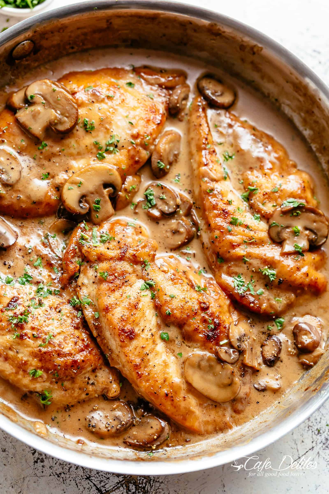

Prep Time: 10 min | Cook Time: 30 min | Servings: 4

Ingredients
1½ pounds boneless chicken breasts
3 tablespoons all-purpose flour
1 tablespoon olive oil
3 tablespoons unsalted butter
8 oz button mushrooms
3 tablespoons finely chopped shallots
2 cloves garlic, minced
⅔ cup chicken broth
⅔ cup dry Marsala wine
⅔ cup heavy cream
chopped thyme and parsley
Steps
Place the flour, salt, and pepper in a ziplock bag. Add the chicken to the bag; seal bag tightly and shake to coat chicken evenly. Set aside.
Heat the oil and 2 tablespoons of the butter in a large skillet over medium-high heat.
Place the flour-dusted chicken in the pan and cook, turning once, until the chicken is golden and just barely cooked through, about 5 to 6 minutes total. Transfer the chicken to a plate and set aside.
Melt the remaining tablespoon of butter in the pan. Add the mushrooms and cook, stirring frequently, until the mushrooms begin to brown, 3 to 4 minutes.
Add the shallots, garlic, and ¼ teaspoon of salt; cook for 1 to 2 minutes more.
Add the broth, Marsala, heavy cream, thyme, salt, and pepper. Bring the liquid to a boil, then reduce the heat to medium and gently boil, 10 to 15 minutes.
Add the chicken back to the pan. Reduce the heat to low and simmer, 2 to 3 minutes. Sprinkle with parsley.